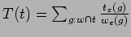
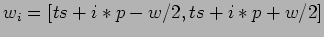
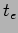
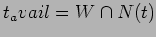
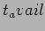
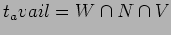

TODO this needs writing properly TODO also need some formal definitions for w/W/tx etc and where they are got from.
How then do we calculate this ? The numerator is the easiest - define the components of this along with any uncertainty terms and consideration of parallelism - this is obtained from the ExecModel. First we must decide what we mean by enablement window. Each group has by reason of its TimingConstraint a set of one or more windows in which it is intended to observe (execute) the group (also called a visit in some systems - need a distinct word), in the case of a Flex group this is a single window [ts,te]. For a periodic monitoring group there will be a series of windows  such that the last window stops around . As a first approximation then the denominator can just be considered to be the size of any window which includes t - (Note no group should by definition of the various timing constraint classes have more than one window corresponding to any given time). Because we have an optical telescope and observe only at night, we can restrict the actual time available to a group for the execution of its observing window to the intersection of the window with the night which includes t. So , thus incresasing the contention contribution. A number of additional approximations will continue to pare this denominator down so we can expect the first approximation to be significantly low. We should note some points here. I have so far assumed implicitly that the group's window of opportunity W is less than the duration of a single night, this will often not be the case, i.e. many group windows extend over serveral days (and nights) and in some case, especially long activation flexible groups may run for weeks or months, so the actual  in these cases should really be represented by W intersect N where N is the set of all the future nights for which the group is available. We cannot stop here, just because it is night does not mean we can make the observation, the target will not neccessarily be visible, either above the geographical horizon or any operational horizon of the telescope, so we can further reduce the available time by considering only the part of the night(s) where the target(s) are visible . Each group has associated with it a number of observing constraints - some of these represent implicit additional time constraints, namely those which can be calculated in advance. An example would be the lunar distance constraint - the observations in the group cannot be made if the moon is less than some given distance from the observation's target. If we add these into the mix we get an extra reduction in the available time for the group to execute - bearing in mind that these calculations must be performed for all future nights which intersect the group's window containing t. We have done all that is possible with the certain knowledge of the observing environment, there remain however a number of uncertainties - we have not considered either those observing constraints which refer to environmental conditions which cannot be predicted in advance with any certainty, e.g. the group's available window will most likely be reduced further if the seeing is worse than the maximum specified in the seeing constraint, similar things may be said concerning other unpredictable elements. (which). We can further reduce the available window if we can predict when the telescope will be unable to observe due to poor weather, mechanical or technical faults, engineering and other downtime. If we can at least obtain some statistical values for these, which may contain seasonal or other variations (e.g. weather downtime, or seeing distribution dependant on time of year) or we can predict sky and weather conditions for the night ahead with some accuracy (this will help for short period monitors) then we can get produce weighted contention profiles.